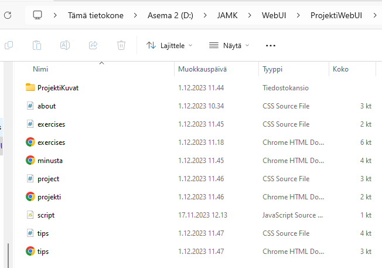

About me and this site
Project work
Hello!
My information: Matias Jylhä - AD1414 - HTK23
I have created this website because I want everyone to relax once a
while and get the stress out of ones mind
Documentation
I have tested this website on google chrome (version 119.0.6045.16), Microsoft edge (Version 119.0.2151.72) and Mozilla firefox (Version 120.0). I desinged this website and how it would look like by myself, but there are codes that i have taken inspiration from to create this site. Some codes needed changes to adjust my site and others I have just wrote how it was presented on the tutorial.
Most of the pictures I have used are from pexels, a website of free photos. The other that I haven't taken from there are all creative commons licensed. For the hamburger menu I had to ask help from chatGPT, and made some little changes to it by myself.
And because I'm not an expert of this topic I have taken some of the tips and exercises from this site called "mind". There were very good relaxation guides that I would also recommmend, so that's why I took some of the stuff from there. I couldn't have made any good guides by myself. On some of the exercises I made some of my own changes.
I used bootstrap on the "Exercises" page to test some CSS framework. It was quite easy to use but it took time to learn how to use it. I did most of the page with it, though needed help with using it for example I couldn't create the hamburger menu with bootsrap all by myself.
Here is the picture of the project file path in my File explorer and how it looks like
